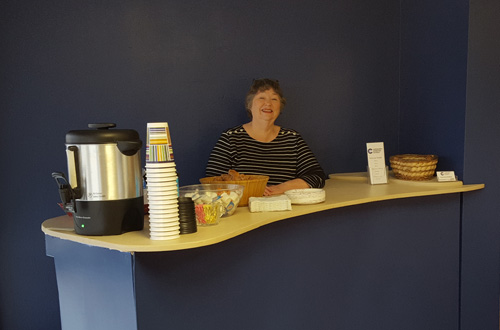
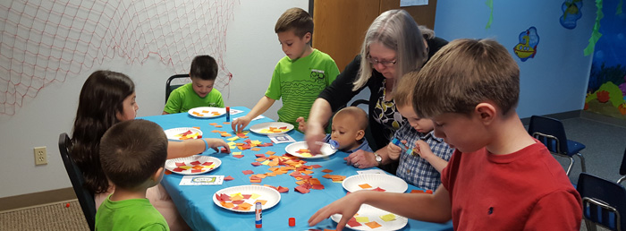

Coffee and donuts available every Sunday morning. Most of us dress casually, wear whatever is comforatble for you!
Worship Service 10:30am Sunday @ CCC
Adult Bible Study Wednesdays 6:30pm @ CCC
(March 29 - May 3)

You don't buy into that whole "Christians have it all together" thing?
GOOD. Neither do we.
Coffee and donuts available every Sunday morning. Most of us dress casually, wear whatever is comforatble for you!
Worship Service 10:30am Sunday @ CCC
Adult Bible Study Wednesdays 6:30pm @ CCC
(March 29 - May 3)
4210 North Frontage Road, Suite B
Fayetteville, Arkansas 72703
Parking is available directly in front of and behind the building.
It's time to be honest, no one has it "all together".
What if I told you there was a place that you could seek truth and seek God without being judged for the decisions you've made?
We've all made mistakes and we beat ourselves up for them enough on our own, we don't need a religious "pile on".
Ain't nobody got time for that!
We want to invite you to a different kind of church, not a perfect church. At Community Christian Church we believe church can be exciting, meaningful, and life-changing. Come casual and enjoy the relaxed, friendly atmosphere, where people accept you for who you are and want to join you in your journey to find God.
We invite you to join us and see how God can change your life!
Children's Church includes music, craft, and a lesson. The lesson during Children's Church is paired with the week's sermons to help parents engage with their kids in discussing each week's lessons
All volunteers that work with children have passed a background check through Shepherd's Watch.
Sermons are normally available by noon each Sunday. The five most
recent are listed here
(view more)